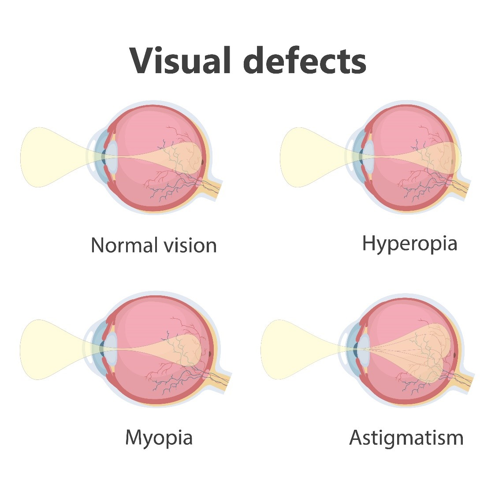
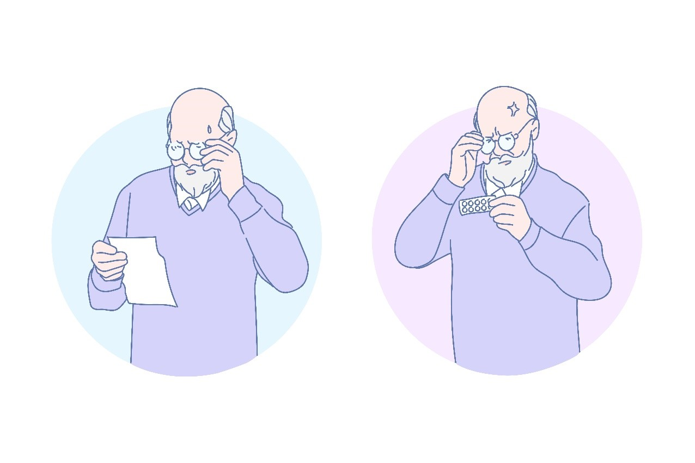

طب العيون في تركيا
يمكنكم الإطلاع على احدث التقنيات العلاجية في طب العيون في تركيا , تمتلك تركيا العديد من المستشفيات الطبية الحديث والتي تمتلك احدث الاجهزة الطبية والكوادر الطبية الخبيرة التي جعل من تركيا دولة مميزة في طب العيون

طرق علاج طول النظر في تركيا وأحدث التقنيات
جدول المحتويات
ما هو طول النظر ؟
طول النظر يصف حالة الخطأ الإنكساري في العين ، والذي يعني أن العين لا تعكس الضوء بشكل سليم ، ولا يتركز على الشبكية بشكل صحيح ، وبطول النظر تبدو الأشياء البعيدة واضحة ، لكن الأشياء القريبة تظهر بشكل مشوش.
وتعمل القرنية وعدسة العين على عكس الأشعة الضوئية القادمة بإتجاه الشبكية في خلفية مقلة العين ، وتستقبل شبكية العين المعلومات المرئية ، وترسلها إلى العصب البصري ، والذي ينقل هذه المعلومات إلى الدماغ ، وتسمح القرنية والعدسة المنحنية التي ذات شكل مثالي بتركيز الضوء على الشبكية ، ولكن في القرنية التي تملك أشكال مختلفة تعجز العين على تركيز الضوء بشكل صحيح.
تعدد درجات شدة طول النظر يعتمد على مدى قدرة العين على التركيز على الأشياء القريبة ، إذا كنتم تسطيعون رؤية فقط الأشياء البعيدة فأنتم مصابين بطول نظر شديد ، وتكون الأعراض مختلفة من شخص لآخر ، حيث قد لا يلاحظ المصاب أي مشكلة في الرؤية ، خاصة في عمر الشباب ، بينما للأشخاص الذين يعانون من حالة طول نظر شديد ، تكون الرؤية غير واضحة للأشياء ، وهي إضطراب في العين وليس مرض عيني.

بعض العلامات والأعراض في طول النظر تشمل صعوبة في القراءة وجهد للعين والصداع. العديد من الأطفال مصابين بطول النظر، ومع ذلك لا يعانون من أعراض ضبابية أو سوء في الرؤية ، لأن عيونهم قادرة على ثني أشعة الضوء لوضعها مباشرة على شبكية العين.
ما هو طول النظر الشيخوخي؟
طول النظر الشيخوخي هو عندما تخسر العين تدريجياً القدرة على رؤية الأشياء عن قرب بوضوح ، وهو أمر طبيعي مع التقدم في العمر ، وقد تُلاحظ هذه الأعراض بعد عمر 40 ، مثل الإضطرار لأبعاد الكتاب لرؤيته بوضوح أكثر.

و تستقر العدسة خلف قزحية العين ، ويتغير شكلها ليتركز الضوء على الشبكية ، ففي عمر الشباب تكون العدسة رقيقة ومرنة ، ويتغير شكلها بسهولة ، هذا يجعلكم ترون الأشياء القريبة والبعيدة بشكل جيد ، بعد عمر 40 تصبح عدسة العين أكثر صلابةً ، ولايمكنها أن تغير شكلها بسهولة ، هذا يجعل القراءة ووضع الخيط في الإبرة أو المهام اليومية عن قرب أكثر صعوبةً.
تقدم علاجك الطبية خدمة الإستشارة المجانية مع أمهر الأطباء وعبر إستخدام أحدث تقنيات طب العيون في تركيا.
أسباب طول النظر ؟
القرنية المسطحة هي أحد أسباب طول النظر ، يمكن أيضاً لمقلة العين القصيرة أن تتسبب في حدوثها ، هذا يجعل الأشعة الضوئية تتركز خلف الشبكية بدل من الشبكية ، ولتتمكن أعيننا من الرؤية يجب أن تكون أشعة الضوء منحنية أو منعكسة عبر القرنية وعدسة العين لتتركز على الشبكية ، ويكون إحتمال الإصابة كبير في حال كان الوالدين مصابين بطول النظر.
ما سبب طول النظر عند الأطفال
طول النظر عادة ما يكون موروثا ، لكن معظم الأطفال المصابين بطول النظر لا يعانون من ضبابية الرؤية ، خاصة إن كانت الحالة غير شديدة ، ومع التركيز عيون الأطفال قادرة على ثني أشعة الضوء ووضعها مباشرة على شبكية العين ، لكن مع نمو العين وتصبح أكثر طولاً يقل أعراض طول النظر.
طرق علاج طول النظر في تركيا
سيقوم الطبيب المختص بتشخيص الحالة عبر فحص العين الشامل ، ومن ضمنه تسليط ضوء خاص على العين ، ومن ثم استخدام تنظير الشبكية لرؤية مكان إنعكاس الأشعة الضوئية ، بالإضافة لفحص قياس حدة البصر عبر الطلب منكم قراءة أحرف على الرسم البياني ، وذلك كله بعد أخذ التاريخ الطبي والمرضي العائلي ، وبناءاً على المعلومات سيقوم الطبيب بذكر العلاج المناسب لكم ،
عادةً يمكن تصحيح النظر مع النظارات و العدسات اللاصقة الطبية ، البعض الآخر بحاجة لتدخل جراحي ومن أنواعها:
لا يوجد طريقة لعكس العملية التي تسبب طول النظر الشيخوخي ، لكن يمكن تصحيح الرؤية المرافقة للحالة عبر الجراحة و النظارات و العدسات الطبية اللاصقة ، الأشخاص الذين لديهم مشكلة في رؤية الأشياء القريبة والبعيدة يمكنهم الإستفادة من العدسات المتطورة.
في المستقبل القريب سيمكن تصحيح بعض حالات طول النظر الشيخوخي عبر قطرات العين أو على الأقل التخفيف من جهد العين والصداع.
1. علاج طول النظر باستخدام النظارات
العدسات المطلوبة لتصحيح طول النظر هي العدسات المحدبة التي تتلاقى أشعة الضوء عبرها داخل العين للوصول النقطة المركزية للعين على الشبكية ، يمكن تحمل النظارات بشكل أفضل عند الأطفال ، ولكون عيون الأطفال مازالت مرنة فهم ليسوا بحاجة للنظارات بشكل تلقائي ، بل يجب إستشارة الطبيب لتحديد مدى حاجتهم لإستعمال النظارات الطبية.
- العدسات التقليدية في طول النظر:
تتصف بكونها سميكة في المركز ورقيقة تدريجيا نحو الحواف / تتطلب الحالات الطبية الأشد عدسات أكثر سمكاً ، مما يعني أن بعض العدسات التقليدية المستخدمة لتصحيح هذه الحالات من طول النظر لها انتفاخات سميكة جدا في مركزها.
- العدسات اللاكروية:
تتصف هذه العدسات بكونها شبه كروية الشكل ، بالإضافة كونها رقيقة أكثر ، هي أقل سمكاً من العدسات التقليدية ، بتالي تحافظ على نفس مزايا العدسات التقليدية في تحسين الرؤية في طول النظر مع وجود جاذبية أكبر للمستخدم.
بالإضافة لوجود العدسات المتطورة وهي عدسة متعددة البؤر صنعت خصيصا للأشخاص الذين يحتاجون إلى العدسات التصحيحية لرؤية الأشياء البعيدة والقريبة بوضوح ، وهذه العدسات تسمح لك أن ترى بوضوح على مسافات متعددة دون خط ثنائي البؤرة.
2. علاج طول النظر بالليزر
بإستخدام أشعة ليزر خاصة تدعى بالليزر فوق البنفسجي ، يتم إعادة تشكيل القرنية بهدف تصحيح طول النظر بكافة درجاته ، بغرض الإستغناء عن النظارات والعدسات الطبية ، وتتميز بكونها:
- قد تشكل حل دائم لتحسين الرؤية ، بدلاً من الإعتماد على النظارة والعدسات الطبية والتي تحتاج لفحص دوري وتغيير كل 6 إلى 12 شهراً.
- تسمح بالعودة لممارسة الحياة الطبيعية والنشاطات الرياضية.
- تحافظ على الشكل الجمالي للوجه مقارنة باالنظارة.
- تستعمل تقنيات حديثة ذات تدخل جراحي صغير ، مما يقلل من حدوث أي أضرار جانبية.
- ذات فعالية عالية.
- تفيد في علاج الإنحراف في العين.
تعرَّف على عمليات تصحيح النظر بـالليزر وعمليات فيمتوليزك مع علاجك الطبية.
والجراحة الإنكسارية للعين هي أقل أماناً من النظارات على الرغم من أنها نادراً ما تسبب أي مضاعفات ، ، ومن مخاطرها :
- جفاف العين
- حدوث إنتان
- تصحيح النظر بشكل أقل أو اكبر من اللازم .
- علاج طول النظر بالعدسات
العدسات اللاصقة الطبية هي أكثر الطرق شيوعا لتصحيح أعراض طول النظر ، وهي تعمل عن طريق إعادة تركيز أشعة الضوء على شبكية العين ، كما أنها يمكن أن تساعد في حماية عينيك من الأشعة فوق البنفسجية الضارة ، وذلك عبر طلاء خاص للعدسة.
أفضل طرق علاج طول النظر عند الاطفال
ليس كل طفل مصاب بطول النظر لديه مشاكل في الرؤية ، بل يجب على الطبيب تحديد ما إذا كان بحاجة لنظارة طبية أو عدسة ، وعادة يصف الطبيب النظارة للطفل في حال :
- كان هناك اختلاف كبير في الرؤية بين كلتا العينين.
- ظهور حول في العينين.
- تــأثر الرؤية بشكل كبير.
ولا يلجئ للعدسات إلى مابعد عمر 6 سنوات ، ويجب تجنب إجراء العمليات الجراحية كون عيون الطفل مازالت في مرحلة النمو.
أفضل طرق علاج طول النظر عند الكبار
يمكن للكبار إستعمال النظارات والعدسات الطبية ، بالإضافة للعمليات الجراحية لتحسين الرؤية في طول النظر ، وقد يحتاج المصاب بطول النظر الشيخوخي والذي يرتدي النظارة مسبقا لمشاكل العين الأخرى إلى:
- العدسات ثنائية البؤرة : تقوم بالتصحيح الرؤية للمسافة القريبة والبعيدة ، ويوجد خيط على العدسة يفصل العدسة ، حيث يقوم القسم العلوي بعكس الضوء لتصحيح الرؤية القريبة ، والقسم السفلي يعكس الضوء لتصحيح الرؤية البعيدة.
- العدسات ثلاثية البؤرة : تتكون من ثلاثة أقسام لتصحيح الرؤية للمسافة القريبة والمتوسطة والبعيدة.
- العدسات المتطورة: تقوم بتصحيح الرؤية مثل العدسات الثنائية والثلاثية البؤرة ، لكن بدلاً من وجود خط يفصل مناطق عكس الأشعة الضوئية في العدسة يكون إنعكاس الضوء تدريجيا في العدسة من الأعلى إلى الأسفل.
في حال كون المصاب بطول النظر الشيخوخي يفضل إرتداء العدسات اللاصقة الطبية بدل النظارات ، فهناك نوعان من العدسات اللاصقة التي قد تساعد في تحسين الرؤية:
- العدسات اللاصقة الأحادية الرؤية: تصحح هذه العدسات الرؤية البعيدة في عين ، والرؤية القريبة في العين الأخرى ، لكن هذا النوع من العدسات له مساوئ مثل الشك بتحديد مدى بعد الأشياء و مدى سرعتها.
- العدسات اللاصقة المتعددة البؤرة: تحوي هذه العدسات على حلقات أو مناطق ذات قدرات مختلفة ، وهذا يسمح برؤية الأشياء القريبة والبعيدة في وقت واحد ، لكن قد تكون ذات حدية أخف من العدسات الأحادية الرؤية.
ويمكن ايضاً اللجوء للعمل الجراحي:
- الجراحة الإنكسارية: البعض يميل لإجراء الجراحة للوصول للرؤية الأحادية ، هذا يقلل الحاجة للنظارات المخصصة للمسافات القريبة والبعيدة ، وعبر إستخدام الليزر يقوم طبيب العيون المختص بإعادة تشكيل شكل القرنية لتحسين الرؤية البعيدة في عين واحدة والرؤية القريبة في العين الأخرى ، ويشبه هذا إرتداء العدسات الأحادية الرؤية ، وقد ينصحكم الطبيب بإرتداء هذه العدسات قبل إجراء عملية الليزر ، مما يساعدكم لمعرفة إن كانت هذه الجراحة ستكون مريحة و مرضية لكم.
- زرع حلقات القرنية: ويساعد هذا في علاج طول النظر الشيخوخي ، وتتم عبر تدخل جراحي بسيط ، فيستعيد المصاب الرؤية القريبة للعين ، وسيقوم الطبيب بتحديد إن كنتم مؤهلين لهذا النوع من الجراحة ، وإذا كانت مناسبة لكم.
أفضل طرق علاج طول النظر عند البالغين
تعد النظارة الطبية خيار شائع للبالغين لتحسين الرؤية في طول النظر ، ولا ينصح بإٍستخدام العدسات اللاصقة حتى مابعد فترة المراهقة ، و يعود الأمر للطبيب لتحديد الخيار الأفضل ، ولا يفضل إجراء عملية جراحية قبل 21 عاماً ، للتأكد من ثباتية العين ، ومن بين العمليات المعتادة عملية الليزك و الفيمتو سيكند.
أسئلة شائعة حول علاج طول النظر
نعم ، يمكن تحسين الرؤية عبر إستخدام النظارات والعدسات الطبية ، لكنها ليست حل دائم ، ويجب تغييرها كل 6 إلى 12 شهراً ، و هي تحد من قدرة المصاب على القيام بالنشاطات الرياضية ، لذا يميل الكثير للجوء للعمليات الجراحية خاصة مع تقدم التقنيات الحديثة التي تقلل من أي مخاطر ممكنة.
لا ، لا يمكن علاج طول النظر بالتمارين.
لا ، لا يمكن علاج طول النظر بالعسل ، ويساعد العسل في تحسين الرؤية لإحتوائه على المواد المغذية لشبكية العين والمواد المضادة لإلتهاب العين.
لا ، لا يمكن علاج طول النظر عند الأطفال بالأعشاب ،
لا ، لايمكن علاج طول النظر بالحجامة ، يعتقد أن دور الحجامة في تحسين الرؤية يرتبط فقط بقدرة الحجامة على تحسين الدورة الدموية للعين وإزالة السموم.
يستغرق علاج طول النظر بالعملية الجراحية مدة 30 دقيقة ، ويستلزم التعافي 24 ساعة إلى عدة أيام حتى العودة الكاملة للممارسة الحياة الطبيعية.
هناك العديد من النباتات الطبيعية التي يمكن إستعمالها كبديل في تحسين الرؤية في طول النظر ، ومن بين هذه النباتات العنبة الآسية كونها تزيد من تدفق الدم خلال الأوعية في العين ، العرقون لتخفيف إجهاد العين ، شزندرة صينية لتحسين حدية الرؤية.
نعم ، من العلامات لطول النظر حدوث الصداع.
نعم، الدوخة من الأعراض التي قد يسببها طول النظر.
نعم ، الإصابة بطول النظر قد يسبب الحول.
لا يمكن عكس طول النظر ، لكن يمكن تحسين الرؤية ، وإيقاف تفاقم الحالة عبر العدسات والنظارات الطبية حسب ماينصح به الطبيب.
نعم ، يعد العامل الوراثي من أهم أسباب الإصابة به ، ولكنه ليس العامل الوحيد المسبب للحالة .
لا ، بالوضع الطبيعي لا يسبب طول النظر العمى ، لكن من أعراض طول النظر حدوث الحول العيني ، والذي قد يسبب الكسل العيني ، مما قد ينتج عنه العمى في حال تم إهماله.
تحرير: علاجك الطبية©
المصادر:
- Farsightedness: Hyperopia Treatment - American Academy of Ophthalmology (aao.org)
- https://www.newworldencyclopedia.org/entry/Hyperopia#Diagnosis.2C_prevention.2C_and_treatment
- https://www.healthline.com/health/what-are-progressive-lenses
- طول النظر: حالة يصاب بها كثيرون - ويب طب (webteb.com)
- Farsightedness: Causes, Symptoms & Diagnosis (healthline.com)
اطلع على أحدث المنشورات والأخبار الطبية
عمليات شفط الدهون بالفيزر في تركيا والأسعار 2021
يعتبر شفط الدهون بالفيزر من أفضل عمليات علاج السمنة المفرطة. تعرف معنا على مميزات وعيوب شفط الدهون بالفيزر وكيف تتم العملية وشاهد الفرق قبل وبعد في تركيا.
طرق علاج طول النظر في تركيا وأحدث التقنيات
يعاني الكثير من كبار السن وحتى البالغين من مرض طول النظر . سنتحدث في هذا المقال عن كيفية علاج طول النظر وأسباب هذا المرض ونسبة نجاح العلاج .
الفرق بين زراعة الشعر في ايران وتركيا 2021
بالرغم من أن أسعار زراعة الشعر بين تركيا وايران لا تختلف كثيرا إلا أن هنالك الكثير من الفروق التي قد تحدد لك الدولة الأفضل لزراعة الشعر فيها.
طرق علاج قصر النظر في تركيا وأحدث التقنيات
يعاني الكثير من الأطفال وحتى البالغين من مرض قصر النظر. سنتعرف في هذا المقال على أفضل طرق علاج قصر النظر وأسباب هذا المرض ونسبة نجاح العلاج .